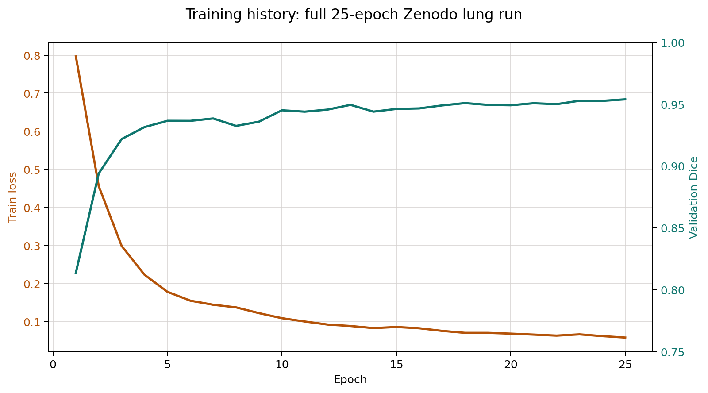
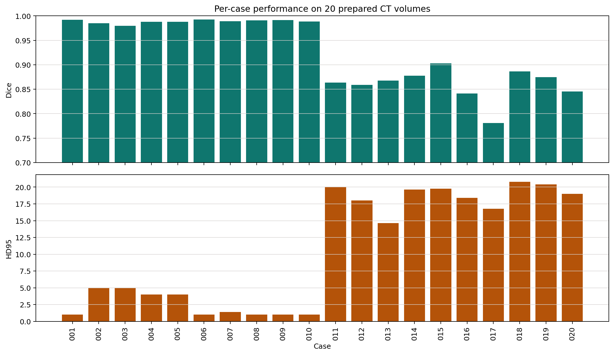
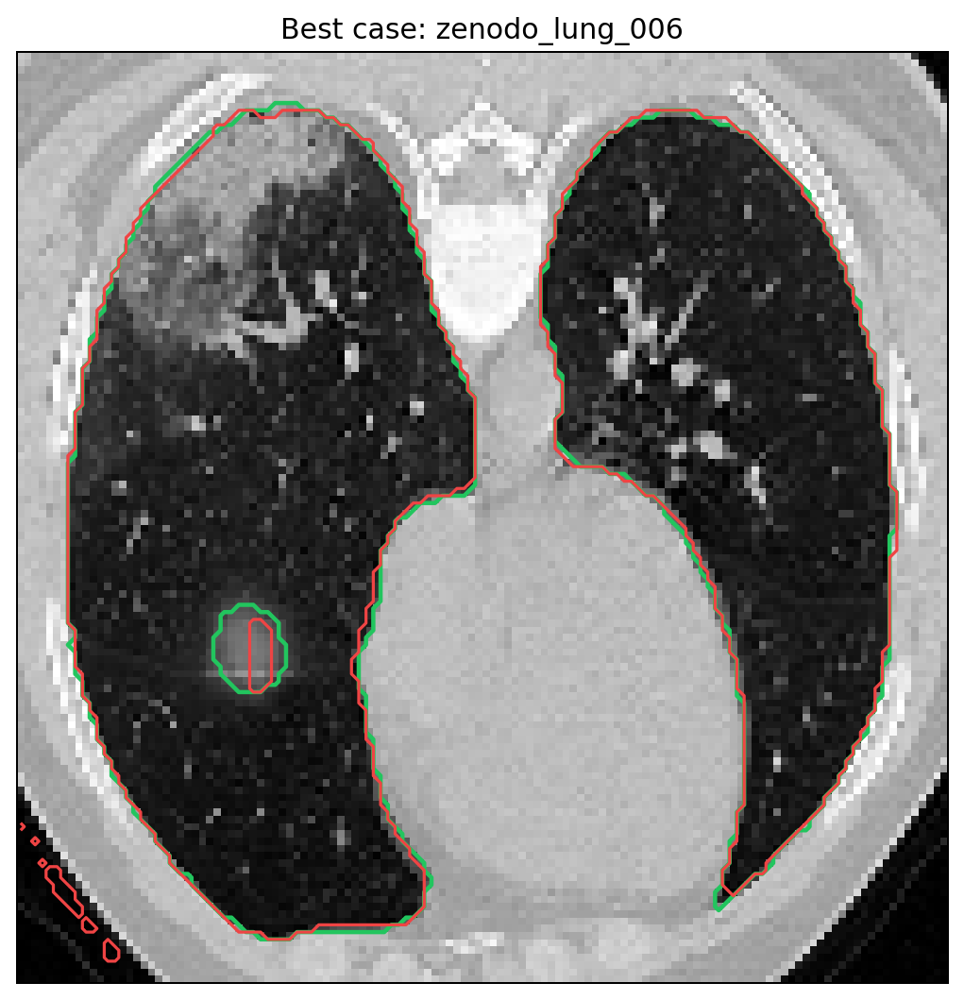
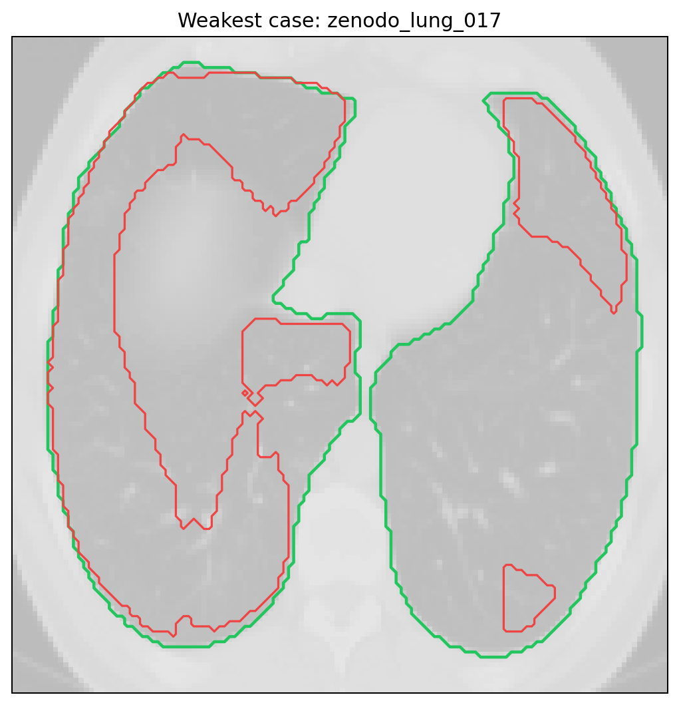

Dataset
COVID-19 CT Lung and Infection Segmentation Dataset
DOI 10.5281/zenodo.3757476
Target: binary lung segmentation
Preliminary Results
Real-data full-volume lung CT segmentation pipeline using SimpleITK, MONAI, and VTK. This page publishes the tracked results from the 25-epoch Zenodo full run.
Full run on all 20 prepared cases with 25 epochs on CUDA.
COVID-19 CT Lung and Infection Segmentation Dataset
DOI 10.5281/zenodo.3757476
Target: binary lung segmentation
MONAI 3D UNet
Prepared volume shape: 96 x 128 x 128
Output artifacts: NIfTI predictions, STL/VTP meshes, metrics, model card
The run is strong overall but visibly bimodal. Cases 001 to 010 are near-perfect, while a weaker subgroup appears in cases 011 to 020.
Tracked result artifacts generated from the full run.




Best and weakest cases from the tracked full run.
Only lightweight, publishable result artifacts are committed for this page.
Airway Centerlines
This repo also includes a separate airway workflow that uses VMTK centerlines and graph-based routing on a real airway surface mesh.
Scripts:
scripts/airway_centerlines.pyscripts/airway_route.pyscripts/airway_visualize.pyExtract centerlines, trace a route to a target coordinate, and render the overlay with VTK.
python3 scripts/airway_centerlines.py \
--surface airway_surface.vtp \
--output airway_centerlines.vtp \
--source-point 0,0,0 \
--target-point 12,8,-40python3 scripts/airway_route.py \
--centerlines airway_centerlines.vtp \
--source-point 0,0,0 \
--target-point 18,4,-55 \
--output airway_route.vtpCenterline View